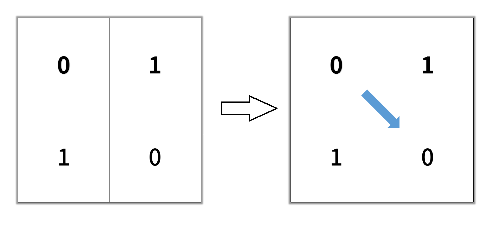
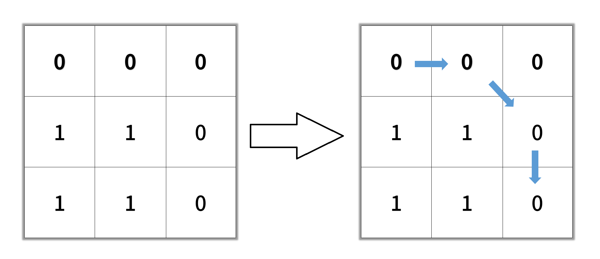

1091. 二进制矩阵中的最短路径
从起点做 8 方向 BFS，走过的格子直接置 1 当 visited；先到终点的步数就是最短路径（按格子数计）。
思路
- 起点或终点是 1 直接返回
-1；路径长按格子数算，起点算 1。 - BFS 一层层扩散：出队一格，向 8 个方向扩展界内、值为 0、没走过的格子。
- 入队时就标记
grid[nx][ny] = 1，防止同一格重复入队。 - 终点出队时的
d就是最短；队列扫空还没到就是-1。
图解
最优解
1import java.util.*;2 3class Solution {4 public int shortestPathBinaryMatrix(int[][] grid) {5 int n = grid.length;6 // 起点或终点被堵死，直接无路7 if (grid[0][0] == 1 || grid[n - 1][n - 1] == 1) return -1;8 ArrayDeque<int[]> q = new ArrayDeque<>();9 q.add(new int[]{0, 0, 1}); // 路径长按经过的格子数算，起点算 110 grid[0][0] = 1; // 走过的格子置 1：标记已访问，不再入队11 int[][] dirs = {{-1, -1}, {-1, 0}, {-1, 1}, {0, -1}, {0, 1}, {1, -1}, {1, 0}, {1, 1}};12 while (!q.isEmpty()) {13 int[] cur = q.poll();14 int x = cur[0], y = cur[1], d = cur[2];15 if (x == n - 1 && y == n - 1) return d;16 for (int[] di : dirs) {17 int nx = x + di[0], ny = y + di[1];18 // 8 个方向里：在界内、是 0、没走过，才入队19 if (nx >= 0 && nx < n && ny >= 0 && ny < n && grid[nx][ny] == 0) {20 grid[nx][ny] = 1;21 q.add(new int[]{nx, ny, d + 1});22 }23 }24 }25 return -1; // 队列扫空还没到终点：无路26 }27}题目
给你一个 n x n 的二进制矩阵 grid 中，返回矩阵中最短 畅通路径 的长度。如果不存在这样的路径，返回 -1 。
二进制矩阵中的 畅通路径 是一条从 左上角 单元格（即，(0, 0)）到 右下角 单元格（即，(n - 1, n - 1)）的路径，该路径同时满足下述要求：
- 路径途经的所有单元格的值都是
0。 - 路径中所有相邻的单元格应当在 8 个方向之一 上连通（即，相邻两单元之间彼此不同且共享一条边或者一个角）。
畅通路径的长度 是该路径途经的单元格总数。
示例 1：

输入：grid = [[0,1],[1,0]] 输出：2
示例 2：

输入：grid = [[0,0,0],[1,1,0],[1,1,0]] 输出：4
示例 3：
输入：grid = [[1,0,0],[1,1,0],[1,1,0]] 输出：-1
提示：
n == grid.lengthn == grid[i].length1 <= n <= 100grid[i][j]为0或1
题面取自力扣当前版本。
数据快照 2026-11-04。题面版权归力扣所有，本站点仅供本人学习使用，请勿对外发布。